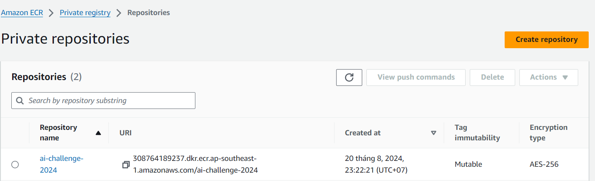
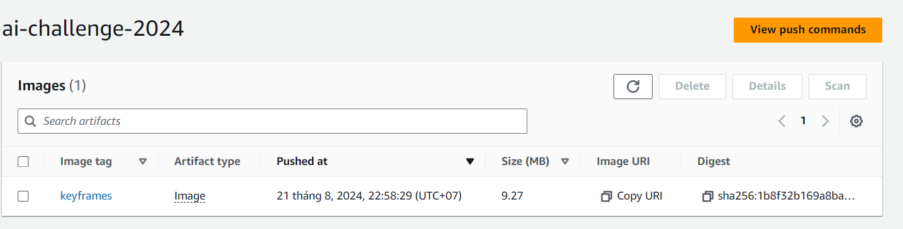

ecr-image and navigate to it.|-- Makefile
|-- cmd
| `-- task-load-to-s3
| |-- Dockerfile
| |-- main.go
| `-- processor.go
|-- go.mod
|-- go.sum
main.go in the cmd/task-load-to-s3 directory.package main
import (
"fmt"
"log"
"os"
"github.com/aws/aws-sdk-go/aws"
"github.com/aws/aws-sdk-go/aws/session"
)
const (
zippath = "/tmp/yourfile.zip"
unzippath = "/tmp/unzipped"
)
func main() {
zipURL := os.Getenv("URL_TO_DOWNLOAD")
bucket := os.Getenv("S3_BUCKET_NAME")
folder := os.Getenv("S3_FOLDER_NAME")
if zipURL == "" || bucket == "" || folder == "" {
log.Fatal("URL_TO_DOWNLOAD and S3_BUCKET_NAME must be set")
}
if folder!="video" && folder!="keyframes" {
log.Fatal("S3_FOLDER_NAME must be either 'videos' or 'images'")
}
// Set up AWS session
sess, err := session.NewSession(&aws.Config{
Region: aws.String("ap-southeast-1"),
})
if err != nil {
log.Fatalf("Failed to create AWS session: %v", err)
}
processor := NewProcessor(sess, bucket, folder)
fmt.Println("Downloading file from", zipURL)
// Download the zip file
err = processor.DownloadZip(zipURL)
if err != nil {
log.Fatalf("Failed to download file: %v", err)
}
// Unzip the file
err = processor.unzip()
if err != nil {
log.Fatalf("Failed to unzip file: %v", err)
}
fmt.Println("Uploading file to S3 bucket", bucket)
// Upload unzipped content to S3
err = processor.uploadToS3()
if err != nil {
log.Fatalf("Failed to upload to S3: %v", err)
}
fmt.Println("File uploaded successfully")
}
processor.go in the cmd/task-load-to-s3 directory.package main
import (
"archive/zip"
"io"
"net/http"
"os"
"path/filepath"
"strings"
"github.com/aws/aws-sdk-go/aws"
"github.com/aws/aws-sdk-go/aws/session"
"github.com/aws/aws-sdk-go/service/s3"
)
type Proccessor struct {
sess *session.Session
bucket string
folder string
}
func NewProcessor(sess *session.Session, bucket string, folder string) *Proccessor {
return &Proccessor{
sess: sess,
bucket: bucket,
folder: folder,
}
}
func (p *Proccessor) unzip() error {
r, err := zip.OpenReader(zippath)
if err != nil {
return err
}
defer r.Close()
for _, f := range r.File {
rc, err := f.Open()
if err != nil {
return err
}
defer rc.Close()
fpath := filepath.Join(unzippath, f.Name)
if f.FileInfo().IsDir() {
os.MkdirAll(fpath, os.ModePerm)
} else {
os.MkdirAll(filepath.Dir(fpath), os.ModePerm)
outFile, err := os.Create(fpath)
if err != nil {
return err
}
defer outFile.Close()
_, err = io.Copy(outFile, rc)
if err != nil {
return err
}
}
}
return nil
}
func (p *Proccessor) uploadToS3() error {
svc := s3.New(p.sess)
err := filepath.Walk(unzippath, func(path string, info os.FileInfo, err error) error {
if err != nil {
return err
}
if info.IsDir() {
return nil
}
file, err := os.Open(path)
if err != nil {
return err
}
defer file.Close()
key := filepath.ToSlash(path)
key = key[strings.Index(key, p.folder):]
key = strings.Replace(key, p.folder, "", 1)
fullKey := filepath.Join(p.folder, key)
fullKey = strings.Replace(fullKey, "\\", "/", -1)
_, err = svc.PutObject(&s3.PutObjectInput{
Bucket: aws.String(p.bucket),
Key: aws.String(fullKey),
Body: file,
})
if err != nil {
return err
}
return nil
})
return err
}
func (p *Proccessor) DownloadZip(url string) error {
resp, err := http.Get(url)
if err != nil {
return err
}
defer resp.Body.Close()
out, err := os.Create(zippath)
if err != nil {
return err
}
defer out.Close()
_, err = io.Copy(out, resp.Body)
return err
}
Dockerfile in the cmd/task-load-to-s3 directory.FROM golang:1.20-alpine3.18 AS builder
WORKDIR /app
COPY . .
RUN go build -o main ./cmd/task-load-to-s3/*.go
FROM alpine:3.18
WORKDIR /app
COPY --from=builder /app/main .
ENTRYPOINT ["/app/main"]
Makefile in the root directory.
run:
go run ./cmd/task-load-to-s3/*.go
build:
docker build -f ./cmd/task-load-to-s3/Dockerfile -t keyframes:v1 .
push:
docker tag keyframes:v1 <aws account_id>.dkr.ecr.ap-southeast-1.amazonaws.com/ai-challenge-2024:keyframes
docker push <aws account_id>.dkr.ecr.ap-southeast-1.amazonaws.com/ai-challenge-2024:keyframes
go mod init keyframes
go mod tidy
make build
ai-challenge-2024. Click on the View push commands button.aws ecr get-login-password --region ap-southeast-1 | docker login --username AWS --password-stdin <aws account_id>.dkr.ecr.ap-southeast-1.amazonaws.com
make push
